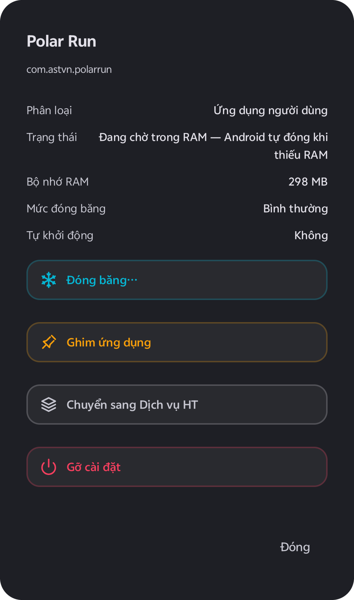

Cryo cho game thủ Android điều khiển những thiết lập bình thường phải dùng ADB mới chỉnh được: độ phân giải kết xuất của những game bạn chọn, ứng dụng nào được chạy ngầm, tần số quét và chế độ Không làm phiền. Không cần root, nhưng CẦN Shizuku.
Cuộn để quan sát từng giao diện thật của Cryo và mở ngăn kéo chi tiết bên dưới mỗi tính năng.

Độ phân giải kết xuất của game (GFX Tool)
Tính năng cốt lõi 01
30%–100%
Độ phân giải kết xuất của game (GFX Tool)
Hạ tỉ lệ điểm ảnh kết xuất cho đúng những tựa game bạn tích chọn theo từng bước 5%, giữ nguyên độ sắc nét của giao diện hệ thống.
Chọn một tỉ lệ kết xuất cho những game bạn tích chọn, từ 100% xuống 30%, mỗi bước 5%.
Chế độ Bộ đệm game (nên dùng trên Android 13 trở lên) dùng tính năng hạ độ phân giải có sẵn trong Game Mode của Android: chỉ game đó vẽ ở độ phân giải thấp hơn, phần còn lại của máy vẫn nét.
Chế độ Toàn màn hình đổi độ phân giải màn hình (wm size) chỉ trong lúc game bạn chọn đang mở, và trả lại khi bạn thoát game.
Khoá độ phân giải áp lại tỉ lệ bạn chọn nếu game tự đặt lại giữa trận. Chỉ tác động lên những game bạn tích chọn.
Tính năng cốt lõi 02
4 MỨC
Đóng băng ứng dụng chạy ngầm & Chế độ Tập trung
Kiểm soát từng ứng dụng đang chiếm RAM bằng 4 cấp độ đóng băng hoặc tự động đóng băng nền khi vào game và rã đông ngay khi thoát trận.
Xem các ứng dụng đang chạy trên máy và lượng RAM chúng dùng.
Bốn mức đóng băng cho từng ứng dụng: Nhẹ (chặn chạy ngầm), Vừa (buộc dừng), Mạnh (không mở được cho tới khi rã đông) và Tối đa (vô hiệu hoá, ẩn khỏi màn hình chính).
Chế độ Tập trung: khi game bạn chọn lên màn hình, Cryo đóng băng các ứng dụng nền chưa được ghim, và rã đông chúng khi bạn thoát game.
Ghim những ứng dụng không bao giờ muốn đóng băng, như tin nhắn, báo thức, ngân hàng. Rã đông bằng một chạm. Không gỡ ứng dụng nào trừ khi bạn chọn Gỡ cài đặt.
Tính năng cốt lõi 03
FPS THỰC
Đo FPS & Cửa sổ nổi
Cửa sổ nổi gọn nhẹ đè lên màn hình chơi game với các chỉ số phần cứng thực tế từ hệ thống, tuyệt đối không đoán số.
Cửa sổ nhỏ đè lên game với các chỉ số bạn chọn: FPS của ứng dụng đang mở, tải CPU, tải GPU, RAM trống, nhiệt độ CPU, GPU và pin.
FPS, tải CPU và tải GPU cần Shizuku. Một số máy hoàn toàn không cho đọc tải GPU hay nhiệt độ CPU, GPU; chỉ số nào không đọc được thì Cryo ẩn đi chứ không đoán. Kéo đi hoặc thu gọn bất cứ lúc nào.
Tính năng cốt lõi 04
0% LUX
Chế độ Game & Báo cáo lần chơi
Tắt sáng màn hình về 0 khi treo máy AFK, khoá 60Hz, tự bật Không làm phiền và lưu báo cáo chi tiết sau mỗi lần chơi ngay trên thiết bị.
Màn hình AFK: lớp phủ đen, độ sáng về 0 trong khi game vẫn chạy bên dưới; chạm hai lần để bật lại. Game vẫn tốn pin, chỉ màn hình bớt tiêu thụ.
Khoá 60Hz: đặt màn hình về 60Hz trên máy cho phép; tắt công tắc là về tần số quét mặc định.
Không làm phiền trong lúc game bạn chọn đang mở.
Báo cáo lần chơi: Sau mỗi lần chơi hiển thị thời gian chơi, nhiệt độ pin, pin đã dùng, và FPS trung bình khi ô FPS đang bật. Lịch sử chơi chỉ lưu trên máy.
Tính năng cốt lõi 05
100% HOÀN TÁC
Mọi thay đổi đều hoàn tác được & Quyền riêng tư
Ghi nhật ký giá trị gốc trước mỗi thay đổi để khôi phục tự động khi thoát game hoặc khởi động lại. Không tài khoản, không máy chủ theo dõi.
Trước khi đổi độ phân giải màn hình, độ sáng, tần số quét hay Không làm phiền, Cryo ghi lại giá trị gốc và trả lại khi bạn tắt tính năng hoặc thoát game. Nếu Android đóng Cryo hoặc máy khởi động lại giữa trận, Cryo trả lại các giá trị đó ngay khi chạy lại được cùng Shizuku.
Không tài khoản, không đăng nhập, không đăng ký. Bản thân Cryo giữ mọi thứ trên máy bạn. Quảng cáo do Unity LevelPlay (ironSource) và Unity Ads phân phối.
1. Bắt buộc có Shizuku
Dòng chảy kích hoạt Shizuku trong 3 bước
Bắt buộc có Shizuku
Cryo gửi lệnh qua Shizuku, một ứng dụng miễn phí, mã nguồn mở, cấp quyền ADB shell cho ứng dụng mà không cần root. Không có Shizuku thì hạ độ phân giải, đóng băng, Chế độ Tập trung, bộ đếm FPS, khoá 60Hz và Không làm phiền đều không hoạt động, còn bộ đo chỉ hiện những gì Android cho một ứng dụng thường đọc, như RAM trống và nhiệt độ pin. Cryo hướng dẫn bạn cài Shizuku một lần (Gỡ lỗi không dây, Android 11 trở lên). Tuỳ máy, Shizuku có thể phải bật lại sau mỗi lần khởi động lại.
01
Không cần Root
Cấp quyền ADB shell tiêu chuẩn cho Cryo thông qua ứng dụng mã nguồn mở Shizuku mà không đụng chạm tới phân vùng hệ thống hay bảo hành máy.
02
Gỡ lỗi không dây 1 lần trên Android 11+
Cryo hướng dẫn bạn ghép nối Gỡ lỗi không dây trực tiếp ngay trên điện thoại (Android 11 trở lên) mà không cần cắm cáp vào máy tính.
03
Tự động hoàn tác 100% khi thoát game
Mọi thay đổi độ phân giải màn hình, độ sáng, tần số quét và Không làm phiền đều được ghi lại giá trị gốc và tự động trả lại nguyên trạng ngay khi bạn tắt tính năng hoặc thoát game.
Minh bạch & Trực diện
So sánh bản Miễn phí và Cryo PRO
Mặc định
Bản Miễn phí
Cryo miễn phí, có quảng cáo. Tích chọn một game, bật một tính năng hay đóng băng một ứng dụng dùng một lượt trong số lượt miễn phí có hạn; xem video có thưởng để nhận thêm lượt.
Đầy đủ 5 nhóm tính năng: hạ độ phân giải, đóng băng 4 mức, đo FPS, AFK & Báo cáo lần chơi
Nhận thêm lượt bất cứ lúc nào bằng cách xem quảng cáo video có thưởng
Tự động hoàn tác 100% giá trị gốc khi thoát game hoặc khởi động lại
Cryo PRO
Nâng cấp Cryo PRO
Cryo PRO gỡ quảng cáo và không giới hạn lượt. Thanh toán an toàn qua Google Play Billing, gắn trực tiếp với tài khoản Google Play trên máy của bạn.
Không giới hạn lượt bật tính năng, tích chọn game và đóng băng ứng dụng
Gỡ bỏ hoàn toàn quảng cáo biểu ngữ và video có thưởng
Không cần tạo tài khoản riêng — khôi phục quyền PRO tự động qua Google Play
Mọi thay đổi đều hoàn tác được
Trước khi đổi độ phân giải màn hình, độ sáng, tần số quét hay Không làm phiền, Cryo ghi lại giá trị gốc và trả lại khi bạn tắt tính năng hoặc thoát game. Nếu Android đóng Cryo hoặc máy khởi động lại giữa trận, Cryo trả lại các giá trị đó ngay khi chạy lại được cùng Shizuku.
Quyền riêng tư & Minh bạch dữ liệu
Không tài khoản, không đăng nhập, không đăng ký. Bản thân Cryo giữ mọi thứ trên máy bạn. Quảng cáo do Unity LevelPlay (ironSource) và Unity Ads phân phối.